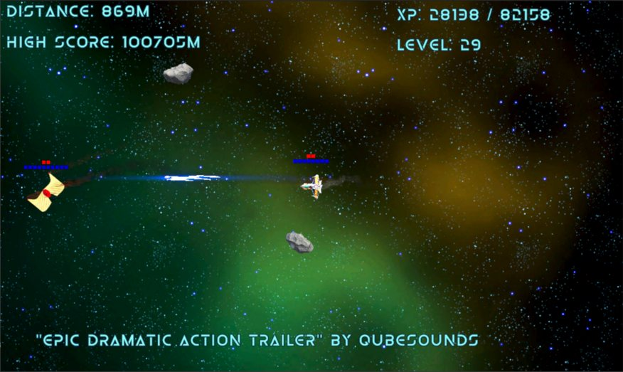
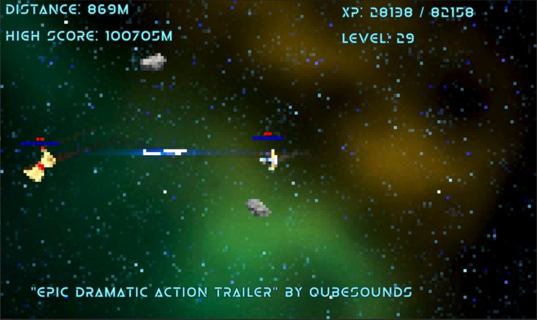

Shipped · Steam · 2024 · Unity URP
The Quantum Conflict
A space dogfighting game made by a two-person team; Josh Chapman and I split the work 50/50, and FlashPoint Games published it on Steam. My side covered rendering and effects, plus content and Endless Mode. This page breaks down the graphics work.

Launch trailer.
Six URP render features, switched at runtime
In Endless Mode, players unlock "dimensions" by reaching distance milestones. Each dimension changes how the whole game looks. I built every dimension as its own URP ScriptableRendererFeature with its own HLSL shader:
- Pixel ProvincesDownsampled, point-filtered pixel art
- Photo NegativeFull-frame color inversion
- Quadruple ScreenThe frame tiled into four quadrants
- Chromatic AberrationOffset red and blue channels
- GlitchRandomized, timed distortion bursts
- Color ShiftHue cycling in HSV space
How it's wired
- The passes. Each feature enqueues a pass after transparents. Using a command buffer, the pass blits the camera's color target through its material into a temporary render target, then copies the result back.
- Switching at runtime. URP doesn't expose its renderer feature list at runtime, so the controller reaches into the pipeline asset's renderer data and turns features on and off by name. Only one dimension is active at a time.
- Progression. A dimension manager ties each effect to a distance requirement. It awards XP when a dimension unlocks and saves the unlocks between sessions.
Pixel Provinces
The pixel pass draws into a temporary target sized at the camera resolution divided by a pixelation factor, with point filtering. The shader snaps UVs to the grid and blends the result with the original frame, so the transition into the dimension can fade in instead of popping:
float2 pixelUV = floor(i.uv * _PixelationSize) / _PixelationSize;
fixed4 pixelColor = tex2D(_MainTex, pixelUV);
fixed4 originalColor = tex2D(_MainTex, i.uv);
return lerp(originalColor, pixelColor, _PixelationBlend);


The MandelBoss
The final villain is an entity from another dimension, so it needed to look like nothing else in the game. Instead of a modeled mesh, it's a Mandelbulb fractal, raymarched in real time in a transparent shader. The same shader with different settings drives the boss and its projectiles.
- Distance estimator. A power-n Mandelbulb in spherical coordinates, 7 iterations, with an orbit trap kept for coloring.
- Marching. 48 steps of over-relaxed sphere tracing that backs off when it overshoots. It stops once the error falls below about one pixel's footprint, so it spends steps only where they matter on screen.
- Lighting. Normals from central differences, plus soft shadows from a 50-step penumbra march.
- Animation. The fractal power oscillates between a minimum and a maximum while the shape rotates, so the boss never holds a stable form. Four color parameters, mixed through the orbit trap, set the look of each variant.
Space that bends
- Black holes and wormholes. A Shader Graph screen-space distortion that samples the scene color through a twirl and noise, so the space behind it appears to bend toward the center.
- Time bubbles. Fields drawn with scene depth, fresnel, and vertex displacement, to show where time runs differently.
- Rewind. A VHS-style shader for the rewind effect.
- VFX Graph. Effects for the arena border, hits, warp speed, and auras, plus the thrusters, explosions, and the boss's death.
Content and Endless Mode
On top of the graphics work, I built the ships, planets, nebula backgrounds, and asteroids, along with eight of the maps. I also made Endless Mode's distance tracking, spawning, rewards, and XP, plus the settings and UI work that came with shipping on Steam.